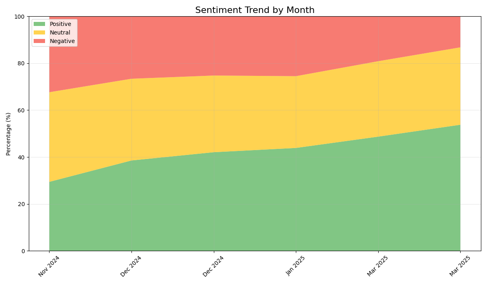
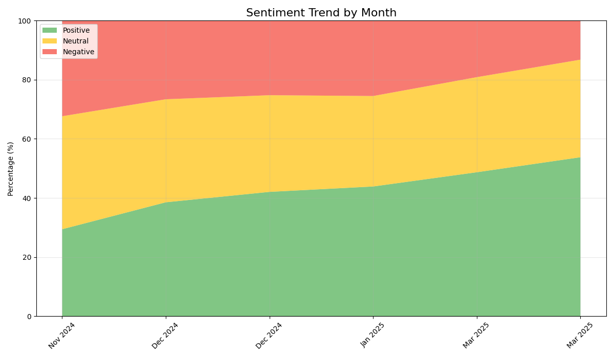

Visualizations
Sentiment Distribution:

Sentiment Trend Over Time:
| Product Name: | Premium Wireless Headphones |
| Total Reviews: | 90 |
| Sentiment Score: | 0.58 |
| Average Rating: | 4.2 |
| Sentiment | Count | Percentage |
|---|---|---|
| Positive | 59 | 66.0% |
| Neutral | 23 | 26.0% |
| Negative | 7 | 8.0% |
Sentiment Distribution:
Sentiment Trend Over Time:
Generated on: 2025-03-31 16:27:43